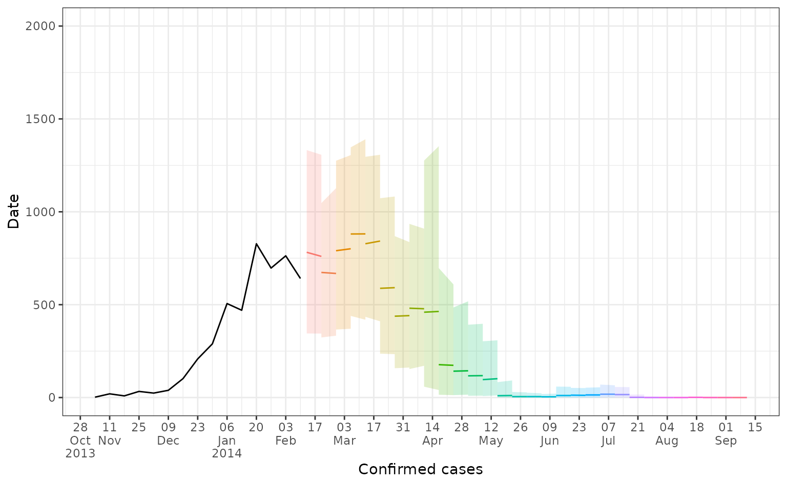

Simple short-term forecasting with relative R0
gam-forecasting-workflow.RmdOne potential use of the {climateR0} package is to use
temperature-dependent R0 values as an input within a short-term
forecasting model. In this vignette we outline an example using a
generalised additive model, implemented in the mgcv
package.
As a case study, we’ll use the same data as in the ‘Getting Started’ vignette. We will forecast confirmed dengue cases from the 2013/4 DENV-3 outbreak in Fiji. Here we show laboratory confirmed cases over time in Central Division.
fiji_cases <- fiji_2014 |>
ggplot2::ggplot() +
ggplot2::geom_line(ggplot2::aes(x = date, y = cases), col = "#016c59") +
ggplot2::scale_x_date(breaks = "month", date_labels = "%b-%y") +
ggplot2::labs(x = "Date", y = "Cases") +
ggplot2::theme_classic()
fiji_cases
Model set-up
First, we calculate temperature-dependent R0 values using mean temperature.
fiji_2014$rR0 <- temperature_r0(fiji_2014$av_temp, "AeaeDENV")We next define a function to weight lagged cases by the dengue serial interval.
# Function to weight past cases by dengue serial interval
# From Siraj et al 2017
weight_cases <- function(x) {
lag(x, 2) * 0.2 + lag(x, 3) * 0.425 + lag(x, 4) * 0.25 + lag(x, 5) * 0.125
}Now we wrangle the Fiji 2014 data for forecasting and set our forecast horizon (how many weeks ahead we want to forecast) and the dates we would like our forecasts to start from.
pop <- 342000
model_data <- fiji_2014 |>
dplyr::mutate(date_numeric = as.numeric(date - min(date) + 1)) |>
dplyr::arrange(date) |>
dplyr::mutate(
cumulative_cases = cumsum(cases),
pop_susceptible = 1 - (cumulative_cases / pop),
weighted_lagged_cases = weight_cases(cases),
log_weighted_lagged_cases = log(weighted_lagged_cases + 0.001),
log_pop_susceptible = log(pop_susceptible + 0.001)
)
horizon <- 2
prediction_dates <- seq(
from = as.Date("2014-02-06"),
to = as.Date("2014-09-01"),
by = 7
)Forecasting
We now generate 2-week ahead forecasts for each of our prediction dates.
all_forecasts <- NULL
weekly_forecasts <- NULL
for (prediction_start in prediction_dates){
prediction_start <- as.Date(prediction_start)
message(
"Generating forecasts for prediction week starting: ",
as.Date(prediction_start, origin = "1970-01-01")
)
train_data <- model_data |>
dplyr::filter(date <= prediction_start)
# Run gam model
gam_mod <- mgcv::gam(
formula = cases ~ s(rR0, bs = "bs", k = 5, m = 2) +
s(log_weighted_lagged_cases, bs = "bs", k = 5, m = 2) +
offset(log_pop_susceptible),
family = "nb",
data = train_data)
# nolint start: line_length_linter
# Set up testing rows
prediction_rows <- data.frame(
date = as.Date(prediction_start, origin = "1970-01-01") + seq(7, 7 * horizon, by = 7),
date_numeric = max(train_data$date_numeric) + seq(7, 7 * horizon, by = 7),
rR0 = rep(tail(train_data$rR0, 1), horizon),
log_pop_susceptible = rep(tail(train_data$log_pop_susceptible, 1), horizon),
log_weighted_lagged_cases = rep(tail(train_data$log_weighted_lagged_cases, 1), horizon),
cases = rep(NA, horizon)
)
# nolint end
train_test_data <-
rbind(
train_data |> dplyr::select( # nolint: nested_pipe_linter
date, date_numeric, rR0, log_pop_susceptible,
log_weighted_lagged_cases, cases
),
prediction_rows
)
# Generate samples from posterior estimates
samples <- posterior_samples(
model = gam_mod,
data = train_test_data,
n = 1000,
method = "mh"
) |>
dplyr::rename(
.sample = .draw,
.value = .response
)
# Aggregate samples to quantiles
prediction_out <- samples |>
dplyr::group_by(.row) |>
dplyr::summarise(
median = median(.value, na.rm = TRUE),
q_0.025 = quantile(.value, 0.0025, na.rm = TRUE),
q_0.975 = quantile(.value, 0.975, na.rm = TRUE),
q_0.25 = quantile(.value, 0.25, na.rm = TRUE),
q_0.75 = quantile(.value, 0.75, na.rm = TRUE)
) |>
dplyr::select(-.row) |>
dplyr::mutate(prediction_start = prediction_start)
prediction_out <- cbind(train_test_data |> select(date), prediction_out) |> # nolint: pipe_continuation_linter
dplyr::mutate(type = case_when(date > prediction_start ~ "forecast",
T ~ "fit"))
# Plot for current forecast
cols <- c(fit = "#8e0152", forecast = "#276419")
current_forecast <- prediction_out |>
cbind(train_test_data |> select(cases)) |> # nolint: pipe_continuation_linter
ggplot2::ggplot() +
ggplot2::geom_line(ggplot2::aes(x = date, y = median, col = type)) +
ggplot2::geom_ribbon(
ggplot2::aes(
x = date,
ymin = q_0.025,
ymax = q_0.975,
fill = type
),
alpha = 0.2
) +
ggplot2::geom_line(ggplot2::aes(x = date, y = cases)) +
ggplot2::scale_fill_manual(values = cols) +
ggplot2::scale_color_manual(values = cols) +
ggplot2::scale_x_date(labels = scales::label_date_short()) +
ggplot2::labs(x = "Confirmed cases cases", y = "Date", fill = "", col = "") +
ggplot2::theme_bw()
weekly_forecasts[[match(prediction_start, prediction_dates)]] <- current_forecast # nolint: line_length_linter
all_forecasts <- rbind(all_forecasts, prediction_out)
}
formatted_forecasts <- merge(
all_forecasts |> filter(type == "forecast"),
model_data |> dplyr::select(cases, date),
by = "date",
all = TRUE
) |>
dplyr::mutate(
prediction_start = as.Date(prediction_start, origin = "1970-01-01")
)Plotting forecast outputs
Here we plot all our 2-week ahead forecasts (with different colours depending on their prediction start date), and compare the predictions to the observed dengue data (in black). Here the line shows the median predicted value and the shaded area shows the 95% prediction interval.
forecast_plot <- formatted_forecasts |>
ggplot2::ggplot() +
ggplot2::geom_line(
ggplot2::aes(
x = date,
y = median,
col = as.factor(prediction_start),
group = prediction_start
)
) +
ggplot2::geom_ribbon(
ggplot2::aes(
x = date,
ymin = q_0.025,
ymax = q_0.975,
fill = as.factor(prediction_start),
group = prediction_start),
alpha = 0.2
) +
ggplot2::geom_line(aes(x = date, y = cases)) +
ggplot2::scale_x_date(
date_breaks = "2 weeks",
labels = scales::label_date_short()
) +
ggplot2::coord_cartesian(ylim = c(0, 2000)) +
ggplot2::labs(x = "Confirmed cases", y = "Date") +
ggplot2::theme_bw() +
ggplot2::theme(legend.position = "none")
forecast_plot
We can also look at forecasts for specific weeks.
Further thoughts
This work is very exploratory, using a simple and quick forecasting method. Some points to consider:
- In this implementation, there is nothing constraining the smooths on relative R0 such that they are monotonically increasing. It’s therefore possible to get non-biologically plausible smooths, which could be a particular issue early in an outbreak with low numbers.
- Missing data in the case time series would cause an issue here in the calculation of weighted lagged cases (although this could be worked around with interpolation during data wrangling).
- This implementation doesn’t account for lags in temperature-dengue relationships - it could be that relative R0 has greater predictive ability if lagged. This would also then allow for rR0 to be incorporated into the modelling framework without assuming that rR0 remains constant over the forecasting horizon.
- More complex models would also allow for better extrapolation of underlying trend. For instance, autocorrelation could be taken into account with a latent dynamic process (for instance, using mvgam).
- The depletion of susceptibility term does not take into account any immunity from previous dengue seasons, if this is known it could be incorporated.
- Forecasting performance is low, particularly around the peak in March 2014, further model tuning could improve this. It would also be useful to compare performance with a simple case forecasting model using no climatic information.
- It also could be more useful to incorporate relative R0 values into a modelling framework with more mechanism included, for instance to scale R0 within a mechanistic or semi-mechanistic framework.
- Some ideas for useful functions to support this kind of forecasting
could be:
- A function to interpolate population size between census estimates.
- A function to weight past cases by different serial interval distributions.